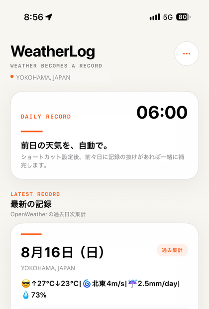
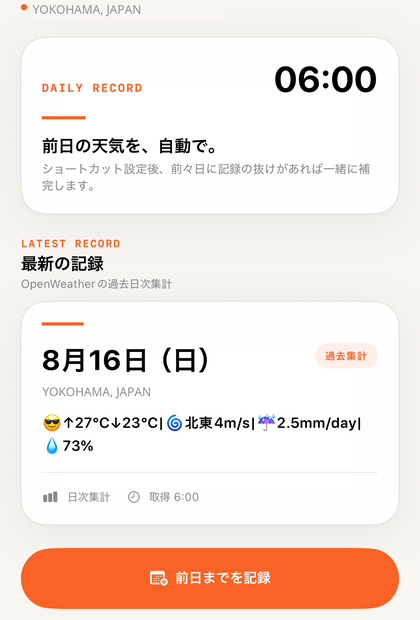
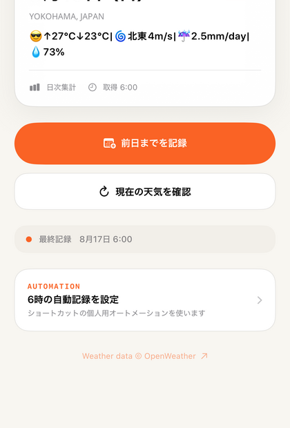

Look back
いつものカレンダーで
特別なログ画面を開かなくても、普段使っているカレンダーから過去の日の天気を確認できます。
Weather becomes a record
毎日の天気を、意識せず記録として積み重ねる。特別なログを開かなくても、いつものカレンダーが天気の記録になります。
01 · Get
OpenWeatherの過去日次集計から、最高・最低気温、降水量、風速・風向、湿度を取得します。現在の天気は確認用として表示し、カレンダーには登録しません。

02 · Record
1日分の気候情報を1件の終日予定へ整理します。日付ごとのマーカーで重複を防ぎ、同じ日を再実行した場合は新規追加ではなく更新します。

03 · Automate
アプリ内の案内に沿ってAppleのショートカットで個人用オートメーションを設定すると、毎朝6時に前日分を記録します。前々日の記録が抜けている場合だけ、一緒に補完します。

Look back
特別なログ画面を開かなくても、普段使っているカレンダーから過去の日の天気を確認できます。
OpenWeather
天気機能にはOpenWeather APIキーとOne Call API 3.0の有効化が必要です。料金・利用枠・上限はOpenWeatherの最新情報をご確認ください。
Privacy
APIキーはiPhoneのKeychainへ保存し、カレンダーの内容は端末内で処理します。広告、アカウント登録、行動追跡はありません。